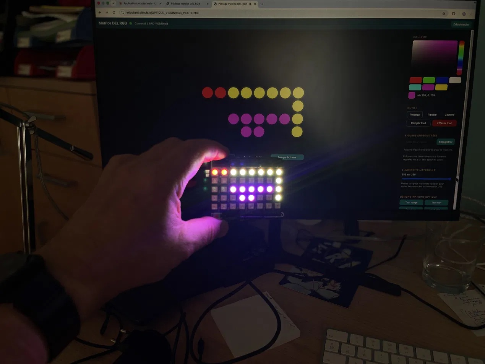

Le dispositif
La matrice RGB est composée de 40 DEL bicolores (8 colonnes × 5 lignes), montée sur un shield Arduino UNO R4 WiFi. Chaque DEL peut afficher n'importe quelle couleur par mélange additif des composantes Rouge, Vert et Bleu.
L'interface web permet de dessiner pixel par pixel, de remplir la matrice, d'appliquer des préréglages optiques, et d'envoyer les trames en temps réel via Bluetooth Low Energy.
Aucune installation de logiciel n'est nécessaire côté PC — tout fonctionne dans Google Chrome.
1Prérequis avant de commencer
✅
Cette application utilise Web Bluetooth, disponible uniquement dans Google Chrome (version 70+) sur Mac, Windows ou Linux. Elle ne fonctionne pas dans Safari, Firefox ou les navigateurs mobiles standard.
- 💻Ouvrir cette page dans Google Chrome
- 📡Vérifier que le Bluetooth de votre ordinateur est activé
- 🔌Brancher l'Arduino sur une alimentation USB (ordinateur ou chargeur)
- ⏱️Attendre quelques secondes que le module BLE démarre et commence à diffuser
2Se connecter au dispositif
- 1️⃣Cliquer sur le bouton "Lancer l'application" ci-dessous — l'interface s'ouvre dans un nouvel onglet Chrome
- 2️⃣Dans l'interface, cliquer sur le bouton "Connecter" en haut à droite
- 3️⃣Une fenêtre de sélection Bluetooth s'ouvre — choisir "ARD-RGBShield" dans la liste
- 4️⃣Cliquer sur "Associer" — le point rouge passe au vert et le statut affiche "Connecté"
- 5️⃣La matrice est maintenant synchronisée en temps réel avec l'interface
⚠️
Si le module n'apparaît pas dans la liste Bluetooth, vérifiez que l'Arduino est bien alimenté, que le Bluetooth de l'ordinateur est actif, et que vous êtes dans Chrome. Rechargez la page et réessayez.
3Utiliser l'interface
- 🎨Sélecteur de couleur : choisissez la couleur avec le picker ou les nuanciers rapides (rouge, vert, bleu, blanc, cyan, magenta, jaune)
- 🖌️Pinceau : cliquez ou glissez sur la grille pour colorier les DEL pixel par pixel
- 💡Démonstrations optique : remplissage instantané en rouge, vert, bleu, blanc, ou bandes R/V/B — idéal pour illustrer la synthèse additive
- 💾Figures enregistrées : sauvegardez vos compositions pour les rappeler en un clic pendant la séance
- 🔆Luminosité : ajustez l'intensité globale des DEL (valeur basse recommandée pour le confort visuel)
4Installer le code Arduino (formateurs)
- 📥Télécharger l'archive ci-dessous — elle contient le sketch Arduino et les instructions d'installation
- 🛠️Ouvrir le fichier
.inodans l'IDE Arduino (version 2.x recommandée) - 📚Installer les bibliothèques requises : ArduinoBLE et Adafruit NeoPixel via le gestionnaire de bibliothèques
- 🔌Sélectionner la carte Arduino UNO R4 WiFi, brancher via USB, téléverser
- ✅Le module commence à diffuser en BLE sous le nom "ARD-RGBShield"
🚀 Lancer l'application RGB
S'ouvre dans un nouvel onglet Chrome — connexion Bluetooth requise